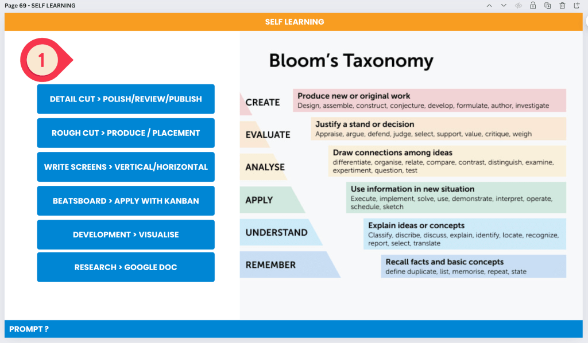

How I Use Bloom's Taxonomy and Video Production Process to Speed Up My Self-Learning on Complex Topics

Introduction
Self-learning can be a challenging journey, especially when tackling complex topics. Over the years, I've developed a strategy that combines Bloom's Taxonomy with a structured video production process to enhance my learning efficiency and retention. This approach not only helps in breaking down complex information but also in applying it practically.
Understanding Bloom's Taxonomy
Bloom's Taxonomy is a hierarchical model used to classify educational learning objectives into levels of complexity and specificity. It consists of six levels:
-
Remember: Recalling facts and basic concepts.
-
Understand: Explaining ideas or concepts.
-
Apply: Using information in new situations.
-
Analyze: Drawing connections among ideas.
-
Evaluate: Justifying a stand or decision.
-
Create: Producing new or original work.
Integrating Bloom's Taxonomy with Video Production
By aligning each stage of Bloom's Taxonomy with specific steps in the video production process, I can systematically deepen my understanding and application of new knowledge. Here’s how I do it:
-
Remember: Research and Google Doc
-
Task: Gather basic facts and concepts about the topic.
-
Action: Use Google to research the topic and compile the information into a Google Doc. This forms the foundation for further learning.
-
Understand: Development and Visualize
-
Task: Explain the gathered information and concepts.
-
Action: Develop a clear understanding by visualizing the information. Create mind maps, diagrams, or outlines to explain the concepts.
-
Apply: Beatsboard and Apply with Kanban
-
Task: Use the information in practical scenarios.
-
Action: Create a beatsboard to plan out the video segments and apply the Kanban method to organize the workflow. This step involves practical application of the knowledge.
-
Analyze: Write Screens and Vertical/Horizontal
-
Task: Draw connections among the gathered ideas.
-
Action: Write the video script, considering different perspectives (vertical and horizontal). Analyze the flow of information and ensure coherence.
-
Evaluate: Rough Cut and Produce/Placement
-
Task: Justify the structure and content of the video.
-
Action: Create a rough cut of the video, placing segments appropriately. Evaluate the effectiveness of the presentation and make necessary adjustments.
-
Create: Detail Cut and Polish/Review/Publish
-
Task: Produce the final video as a new original work.
-
Action: Refine the rough cut, polish the video, review for any final changes, and publish. This stage encapsulates creating a new piece of content based on the learned information.
Conclusion
Combining Bloom's Taxonomy with a structured video production process has significantly accelerated my self-learning journey. By systematically moving through each level of Bloom's Taxonomy and applying it to video production tasks, I can better understand, apply, and create based on complex topics. This method not only enhances learning but also results in the production of valuable content that can be shared with others.
By structuring your learning process around these steps, you can tackle complex topics more efficiently and produce meaningful outputs that demonstrate your understanding.
Imported from rifaterdemsahin.com · 2024